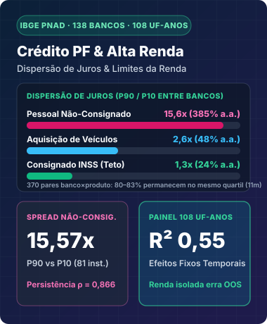

Estudo 01 · UCI Credit Default
Impacto da qualidade dos dados no risco de inadimplência
A simulação em 30.000 contas estima NT$ 6,48M (97,6%) sob premissas operacionais; não é recuperação efetiva observada em operação real.
Análises com escopo, métricas e limitações documentados
Casos analíticos reproduzíveis baseados exclusivamente em fontes de dados públicas oficiais ou benchmarks públicos anonimizados (UCI Machine Learning Repository, Dados Abertos CVM, IBGE PNAD Contínua, Banco Central do Brasil SGS e GiveMeSomeCredit / OpenML #46929).
A simulação em 30.000 contas estima NT$ 6,48M (97,6%) sob premissas operacionais; não é recuperação efetiva observada em operação real.

Separa sobrevivência determinística (33/42 conflitos de status sob Recência) da acurácia de pareamento sem CNPJ (Entity Resolution, PR-AUC 0,884).

Duas conclusões independentes, sem inferência causal: há persistência no posicionamento das taxas bancárias; renda estadual isolada não supera a inércia na previsão para 2025.

Ajustar por feriados nacionais ANBIMA e dias úteis reduz o erro absoluto de projeção (MAE) em R$ 7,39 bi/mês (de R$ 13,63 bi para R$ 6,24 bi/mês · wMAPE 2,79%) e acerta 97,0% dos meses na meta ±5%.

Simulação Otimizada 2D aprova 49,68% com Bad Rate EAD de 1,05% (perda bruta de 0,69%) e 5,05M u.m. (4,14% P&L/EAD vs 4,71M RF 1D @ mesmo EAD e 4,55M rígida), isolando 1.794 casos Early Warning (6,35% BR).

Síntese de dois benchmarks públicos: o ganho preditivo é condicional e o retorno econômico é simulado; não há inferência de impacto empresarial real.